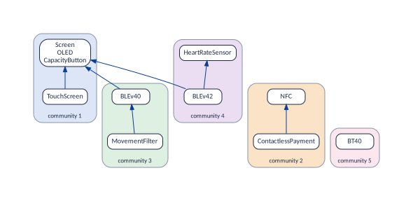
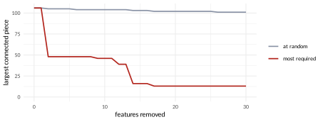
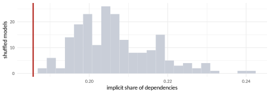

Patterns and statistics
Triangles
Function: vp_triangles()
The question. Which small patterns recur?
Three features that are all related to one another, by requirement or by conflict, form a triangle. There are four kinds, by the number of conflicts, and each is a modelling idiom; a fifth pattern must never occur (the figure):
vp_triangles(band)
#> # A tibble: 5 x 3
#> kind meaning count
#> <chr> <chr> <dbl>
#> 1 no conflict a chain of requirements 1
#> 2 one conflict alternatives with a common requirement 2
#> 3 two conflicts an inherited conflict 7
#> 4 three conflicts three alternatives 2
#> 5 impossible a feature requiring, directly or through the third, two features that exclu~ 0
vp_triangles(bb)
#> # A tibble: 5 x 3
#> kind meaning count
#> <chr> <chr> <dbl>
#> 1 no conflict a chain of requirements 126
#> 2 one conflict alternatives with a common requirement 27
#> 3 two conflicts an inherited conflict 111
#> 4 three conflicts three alternatives 29
#> 5 impossible a feature requiring, directly or through the third, two features that exclu~ 0| Kind | What it is |
|---|---|
| no conflict | A chain: A requires B, B requires C (and A requires C). |
| one conflict | Two features exclude each other and both require the third one: alternatives under a common parent. |
| two conflicts | An inherited conflict: A requires B, and both exclude C. |
| three conflicts | Three alternatives. |
| impossible | One conflict, but placed so that a feature would need both features of the conflict: it requires both, or requires one directly and the other through the third. That feature would be dead, so the kind is always 0 in correct files. |
With minimal = TRUE the triangles are counted on the
skeleton and the primitive conflicts, which drops those that are mere
consequences of others (on the minimal form there are, by construction,
no inherited conflicts).
Is a count high or low? BusyBox has 12 triangles of the kind “alternatives with a common requirement” in its minimal form. Is that many? It depends on what chance alone would give. A model with the same number of features, where each feature has as many requirements, dependants and conflicts as in BusyBox, but placed at random, also has some triangles, just by coincidence. A kind of triangle that the real model has far more often than such random models is a motif: a pattern that the people who wrote the model use on purpose Milo et al. (2002). One that the real model has far less often is an anti-motif: a pattern they avoid.
vp_triangle_significance() makes the comparison. It
counts the triangles of the minimal form, where each link is close to
one decision of the writers. Then it builds many random models of the
same shape (runs, 100 by default): it shuffles the arrows
of the skeleton keeping how many direct requirements and dependants each
feature has, and the conflicts keeping how many conflicts each feature
has. It counts their triangles too, and compares:
vp_triangle_significance(bb, runs = 200) |>
select(kind, observed, random_mean, z, p_more)
#> # A tibble: 5 x 5
#> kind observed random_mean z p_more
#> <chr> <dbl> <dbl> <dbl> <dbl>
#> 1 no conflict 0 0.4 -0.639 1
#> 2 one conflict 12 0.17 28.5 0
#> 3 two conflicts 0 0.09 -0.296 1
#> 4 three conflicts 9 0.475 12.8 0
#> 5 impossible 0 0.02 -0.142 1observedis the count in BusyBox;random_meanthe average over the 200 random models.zsays how far the observed count is from the random ones, in standard deviations of the random counts: around 0, chance; above 3 or below , far from chance.p_moreis the share of random models with at least as many triangles as the real one: near 0 means that chance almost never gets there.
BusyBox has 12 triangles “alternatives with a common requirement”
where chance gives 0.2 on average, and none of the 200 random models
reaches 12: it is a motif. It is the shape of a Kconfig
choice: options of one applet that exclude each other.
Groups of three alternatives are a motif too (9 against 0.5). The other
kinds are rarer than chance, and for good reasons: a skeleton never has
a triangle of three arrows (one of them would follow from the other
two), and correct files never have the impossible kind. On Linux 3.13
the same test (about a minute for 100 random models) gives the same
picture, more sharply: 419 triangles of alternatives under a common
requirement where chance gives 11.
Limits: what this cannot tell you
A triangle is three relationships between two features. A rule over three features (“not all three”) is no triangle, and the same three features can form a triangle that no single rule of the model describes.
A motif is relative to the random models: these keep each feature’s number of links and the order of the hierarchy, and nothing else. Another way of shuffling can give other numbers. On a model as small as the band, nothing can be significant.
Communities
Function: vp_communities()
The question. Which features form closely linked groups? Do they match the declared organisation of the model?
A community is a group of features with more links
inside, and fewer towards the rest, than chance would give. “Than
chance” matters: the measure behind it, the modularity,
is the share of the links that fall inside the groups minus the
share that would fall inside them if every feature kept its number of
links but the links were placed at random. It is 0 for a split no better
than chance, and above about 0.3 for a clear one.
vp_communities() looks for the split with the highest
modularity, with the Louvain algorithm Blondel
et al. (2008). By default it uses the skeleton only:
com <- vp_communities(band)
com |> arrange(community)
#> # A tibble: 11 x 2
#> feature community
#> <chr> <int>
#> 1 Screen 1
#> 2 TouchScreen 1
#> 3 OLED 1
#> 4 CapacityButton 1
#> 5 ContactlessPayment 2
#> 6 NFC 2
#> 7 MovementFilter 3
#> 8 BLEv40 3
#> 9 HeartRateSensor 4
#> 10 BLEv42 4
#> 11 BT40 5
attr(com, "modularity")
#> [1] 0.4028
The screen with its atomic set and the touch screen; NFC with contactless payment; the movement filter with BLE 4.0; Bluetooth 4.2 with the heart-rate sensor; and classic Bluetooth alone.
Why the groups do not look like “many links inside”. the figure seems to contradict the definition: the movement filter and BLE 4.0 share one arrow inside their group, and BLE 4.0 has one more arrow out of it, to the screen; classic Bluetooth is a group with no link at all. Two reasons:
The skeleton of the band is tiny and almost a tree: 9 nodes and 6 arrows. In a tree every group has at most one link fewer than it has features, so no group can be dense. The best split is to cut the tree into its branches, which is what Louvain did, and the modularity, 0.40, says the split is clearer than chance, not that the groups are dense. Communities mean something on large models, with many links per feature.
Only the skeleton counts by default: conflicts and at-least-one lines play no part. Classic Bluetooth has no arrow in the skeleton, only a conflict with the screen and an at-least-one line to it, so it is a group of its own.
The argument graphs adds the primitive conflicts and
at-least-one lines:
com_all <- vp_communities(
band,
graphs = c("requires", "excludes", "atleastone")
)
com_all |> arrange(community)
#> # A tibble: 11 x 2
#> feature community
#> <chr> <int>
#> 1 Screen 1
#> 2 TouchScreen 1
#> 3 OLED 1
#> 4 CapacityButton 1
#> 5 BT40 1
#> 6 ContactlessPayment 2
#> 7 NFC 2
#> 8 MovementFilter 3
#> 9 HeartRateSensor 3
#> 10 BLEv40 3
#> 11 BLEv42 3
attr(com_all, "modularity")
#> [1] 0.3457Classic Bluetooth now joins the screen, its opposite, and the two versions of BLE join the movement filter and the heart-rate sensor: the features of Bluetooth, tied by conflicts. Which graphs to use depends on the question: the skeleton alone groups features that build on each other; with the conflicts, features that compete.
vp_compare_groupings() compares two groupings of the
same features: 1 when they are the same, near 0 when they are unrelated.
A real study compares the communities with the declared organisation
(the Kconfig file of each option, the subtree of each feature):
com$feature
#> [1] "Screen" "TouchScreen" "OLED" "CapacityButton"
#> [5] "ContactlessPayment" "MovementFilter" "HeartRateSensor" "BLEv40"
#> [9] "BLEv42" "BT40" "NFC"
declared <- tibble(
feature = com$feature,
group = c(
"display",
"display",
"display",
"display",
"payment",
"sensors",
"sensors",
"bluetooth",
"bluetooth",
"bluetooth",
"payment"
)
)
vp_compare_groupings(com, declared)
#> [1] 0.7629Drawing the communities with vp_plot().
The answer of vp_communities() is a tibble with one row per
feature and its community number. vp_plot() has no boxes
for groups, but it fills each node with the colour you give it (argument
fill, a named vector: feature
colour). So turn each community number into a colour, name the colours
after the features, and draw the minimal form, which is the readable
one:
palette <- c("#FFE9B8", "#D6E9C6", "#D9E3F0", "#F2D7D5", "#E8DAEF", "#FDEBD0")
# one per community
colours <- palette[(com_all$community - 1) %% length(palette) + 1]
vp_plot(
band_min,
"figures/patterns-communities_all.svg",
fill = setNames(colours, com_all$feature),
rankdir = "LR"
)
# one community alone: the features of the movement filter's community
mine <- com_all |>
filter(community == community[feature == "MovementFilter"]) |>
pull(feature)
vp_plot(vp_minimal(vp_subset(band, mine)), "figures/patterns-community_one.svg")
com_all above), one colour each, drawn by
vp_plot() on the minimal form. An atomic set is one box,
filled with the colour of its features.The figure shows the result. The members of an atomic set are always
in the same community, so their box takes their colour. With more
communities than colours, the palette repeats (the operator
%% above); give a longer palette if neighbours must differ.
On a large model, draw one community at a time, as the last line does:
vp_subset() keeps its features and the exact links among
them, and vp_minimal() makes the drawing readable; or keep
the whole model and pass features = to draw only some.
Why it matters. Communities are the modules that the dependencies suggest. Comparing them with the declared organisation (menus, files, subtrees, teams) shows where the structure of the code and the structure of the variability agree, and where a feature sits in the wrong place: a candidate for moving, or for a closer look at its dependencies.
Limits: what this cannot tell you
The algorithm has a random element: another
seedcan give other groups. Repeat it and report how stable the groups are; on the BusyBox history the change between versions is about as large as the change between two runs (Communities over time).By default the communities are found in the skeleton, so the conflicts play no part in them; with
graphs, a conflict counts as a link like a requirement, although it means the opposite.On a small model, or one that is almost a tree, communities are weak whatever the modularity says.
Robustness
Function: vp_robustness()
The question. How much does the model rest on a few features?
Think of the skeleton as a network: two features are connected when a
chain of direct requirements joins them, whatever the direction. The
largest connected piece is the biggest group of
features joined in that way. vp_robustness() removes
features one at a time and measures, after each removal, how many arrows
are left (links_left) and how big the largest piece still
is (largest_piece). It can remove the most required
features first (the default), or features at random
(strategy = "random"), which is the comparison Albert et al. (2000):
vp_robustness(bb, steps = 5)
#> # A tibble: 6 x 4
#> removed feature links_left largest_piece
#> <int> <chr> <dbl> <dbl>
#> 1 0 <NA> 478 106
#> 2 1 CONFIG_FEATURE_SYSLOG 463 106
#> 3 2 CONFIG_LONG_OPTS 439 48
#> 4 3 CONFIG_FIND 418 48
#> 5 4 CONFIG_VOLUMEID 398 48
#> 6 5 CONFIG_FEATURE_SUID 390 48
vp_robustness(bb, steps = 5, strategy = "random")
#> # A tibble: 6 x 4
#> removed feature links_left largest_piece
#> <int> <chr> <dbl> <dbl>
#> 1 0 <NA> 478 106
#> 2 1 CONFIG_FEATURE_IFCONFIG_MEMSTART_IOADDR_IRQ 477 106
#> 3 2 CONFIG_CHOWN 476 105
#> 4 3 CONFIG_ASH_OPTIMIZE_FOR_SIZE 475 105
#> 5 4 CONFIG_FEATURE_PASSWD_WEAK_CHECK 474 105
#> 6 5 CONFIG_DD 472 105Read the first table row by row. Before removing anything, the
largest piece of BusyBox holds 106 features. Removing
CONFIG_FEATURE_SYSLOG, the most required feature, changes
nothing: its dependants stay joined through other features. Removing
CONFIG_LONG_OPTS cuts the piece to 48: it was the only link
between 58 features and the rest. After five removals, 48 features are
left in the largest piece. Five features removed at random, in the
second table, leave 105: almost nothing happens.
What it tells. A model whose largest piece survives random removals but breaks when its hubs go is “robust yet fragile”, like many real networks: most features can change without disturbing the rest, and a few hold the model together. Those few are where a change has the widest reach, and where splitting a model into modules would cut it. The figure shows the two curves for 30 removals.

Limits: what this cannot tell you
It measures the graph, not the product line: removing a feature from a graph is not removing it from the model, whose other rules would change too. Use it to compare models, or versions, rather than as a prediction.
Coreness of the conflicts
Function: vp_coreness()
The question. Which features sit in dense knots of conflicts?
vp_coreness(band) |> arrange(desc(coreness)) |> head(4)
#> # A tibble: 4 x 2
#> feature coreness
#> <chr> <int>
#> 1 MovementFilter 2
#> 2 BLEv40 2
#> 3 BLEv42 2
#> 4 BT40 2The coreness Seidman (1983) of a feature says how deep it sits in a knot of conflicts. It is computed by peeling the excludes graph like an onion:
Remove every feature with no conflict: they have coreness 0.
Remove, again and again, every feature with only one conflict among those left: coreness 1.
Then those with two conflicts among those left: coreness 2. And so on.
What remains at step , the -core, is a group in which every feature excludes at least others of the group. On the band: NFC and contactless payment have no conflict (coreness 0). The screen, its atomic set, the touch screen and the heart-rate sensor each lose their conflicts once their partners outside the knot are peeled (coreness 1). Four features remain: MovementFilter, BLEv40, BLEv42 and BT40, each excluding at least two of the other three. That is the 2-core: the knot of the Bluetooth choices.
What it is for. A high coreness marks a group of
features that all compete with each other: in a configurator, a choice
in it closes off most of the others, and a constraint added in it
ripples through many conflicts. It is a way to find, in a large model,
the dense knots of alternatives that a list of conflicts per feature
hides. On Linux 3.13 the deepest knot has coreness 109: 221 options,
among them the choices of the size of the contiguous memory area
(CMA_SIZE_SEL_*), each excluding at least 109 others of the
knot.
Limits: what this cannot tell you
A knot of conflicts between pairs; conflicts that only a rule over three features creates are not in it. The coreness is computed on the complete excludes graph, where inherited conflicts count too: a deep knot can be the echo of a few primitive conflicts high in the hierarchy.
Is it a power law?
Function: vp_power_law()
The question. Papers say that degree distributions “follow a power law”. Do they?
What a power law is. Take the degree distribution of the figure: how many features are required by 1, 2, 3, … others. It follows a power law when the number of features with dependants falls like : doubling always divides the number of features by the same factor, . On logarithmic axes that is a straight line of slope . Networks with such a distribution are called scale-free: a few enormous hubs and a long tail of small features, with no typical size. The claim matters because it is usually read as evidence of how the network grew (new nodes preferring to attach to big ones) and of how it breaks (robust to random failures, fragile when hubs fail).
Why test it. A straight-looking cloud of dots on a
log-log chart is weak evidence: many other distributions look straight
over a short range. Most networks claimed to follow a power law fail a
formal test Clauset et al. (2009); Broido and Clauset (2019). The test of Clauset
et al., which vp_power_law() runs, has three steps:
Find the degree from which the tail looks most like a power law, and fit its exponent there (the columns
xminandalpha). Only the features with at least dependants are tested.Measure how far the real tail is from the fitted power law.
Generate many tails that do follow that power law, measure their distances the same way, and count how often a true power law looks as far off as the real data: that share is the
p_value.
A small p_value (below 0.1) means that even true power
laws rarely look so different: the power law is rejected. A large one
means only that the data cannot tell it from a power law.
vp_power_law(bb)
#> # A tibble: 1 x 6
#> graph features alpha xmin p_value verdict
#> <chr> <int> <dbl> <dbl> <dbl> <chr>
#> 1 skeleton 178 1.99 1 0.0036 not a power law
vp_power_law(linux)
#> # A tibble: 1 x 6
#> graph features alpha xmin p_value verdict
#> <chr> <int> <dbl> <dbl> <dbl> <chr>
#> 1 skeleton 1760 2.15 8 0.157 a power law cannot be rejectedFor BusyBox, the 178 features with at least one direct dependant were
tested from
,
and the p_value, 0.004, rejects the power law: its features
are not scale-free. For Linux 3.13 the test settled on
:
only the tail of options with at least 8 direct dependants looks like a
power law, with
,
and it cannot be rejected. The test is run on the skeleton by default,
because in the complete graph any deep hierarchy gives a long tail by
construction.
Limits: what this cannot tell you
A statistical test needs data: with fewer than 50 features with a degree above 0 it means little, and the function warns. “Cannot be rejected” is not “proved”: other distributions (a log-normal, for instance) may fit the same tail as well, and the test only examines the tail above , which can be a small part of the features.
A baseline
Function: vp_baseline()
The question. Is a value high or low, compared with a model of the same shape?
What it is for. Every number of the vignettes needs a reference. BusyBox has an implicit share of 0.19: 19 % of its dependencies follow from chains of others. Is that a property of how BusyBox was written, or would any model with as many features and arrows have about the same share? The baseline answers by building many models that keep the shape of BusyBox and lose everything else, and computing the same number on them. If the real value sits among theirs, the shape explains it; if it falls outside, the way the model was written does.
How. vp_baseline() shuffles the
skeleton many times: it swaps the ends of pairs of arrows, so that every
feature keeps its number of direct requirements and of direct
dependants, and the order of the hierarchy (no cycle can appear). Each
shuffled skeleton implies a complete requires graph, and so an implicit
share.
Only the dependencies. vp_baseline()
works on the requires graph alone: it shuffles the skeleton and measures
the arrows it implies. Conflicts and at-least-one lines play no part,
neither in the shuffle nor in the numbers, so it says nothing about
whether a model has more conflicts, or longer inherited ones, than its
shape would give. For conflicts, vp_triangle_significance()
(Triangles) shuffles the primitive
conflicts too, keeping how many each feature has, but only to count
triangles. No function shuffles the at-least-one lines.
bl <- vp_baseline(bb, runs = 200)
summary(bl$implicit_share)
#> Min. 1st Qu. Median Mean 3rd Qu. Max.
#> 0.187 0.199 0.205 0.207 0.213 0.241
attr(bl, "observed")
#> arrows implicit_share
#> 587.0000 0.1857The implicit share of BusyBox, 0.186, is lower than in every shuffled
model (between 0.187 and 0.241): its chains are shorter than chance
would make them. With the same direct requirements per feature, wired at
random, chains would grow longer and more arrows would be implied. The
real BusyBox keeps its requirements local: an option of an applet needs
its applet and rarely anything that needs something else. That is a fact
about the way BusyBox was written, which the size and the degrees alone
do not explain. The same comparison can be made for other numbers:
vp_triangle_significance() does it for triangles.

Limits: what this cannot tell you
Dependencies only: conflicts and at-least-one lines are neither shuffled nor measured.
A baseline depends on how it was randomised: this one keeps the degrees of the skeleton and the order of its features, and nothing else. A value outside the baseline says that something beyond the shape is at work, not what it is.
Features that look alike
Function: vp_similar_features()
The question. Which features play the same role? Which one is the odd one out?
Three functions compare features by their links, in three ways.
Alike in one graph.
vp_similar_features() compares a feature with every other
by their neighbours in one graph (the conflicts, by default):
the features each one excludes. The Jaccard index of
two sets is the number of elements they share divided by the number of
elements in either: 1 for the same neighbours, 0 for none in common.
vp_similar_features(band, "BLEv42") |> head(3)
#> # A tibble: 3 x 2
#> feature similarity
#> <chr> <dbl>
#> 1 Screen 0.333
#> 2 TouchScreen 0.333
#> 3 OLED 0.333BLEv42 excludes MovementFilter, BLEv40 and BT40; the screen excludes only BT40. They share one of the three features excluded by either: . Two features with similarity 1 compete with exactly the same features: a configurator can treat them alike, and a test that covers one of them in some context probably covers the other.
Alike in conflicts, different in requirements.
vp_odd_ones() looks for pairs of features that exclude
almost the same features (conflict similarity above
threshold, 0.6) but differ in what they require. Features
that compete with the same rivals usually play the same role, so a
difference in their requirements is either intended or a missing rule Liben-Nowell and Kleinberg (2007):
vp_odd_ones(bb) |> select(feature_1, feature_2, conflict_similarity) |> head(3)
#> # A tibble: 3 x 3
#> feature_1 feature_2 conflict_similarity
#> <chr> <chr> <dbl>
#> 1 CONFIG_FEATURE_INSMOD_LOADINKMEM CONFIG_INSMOD 1
#> 2 CONFIG_FEATURE_INSMOD_LOADINKMEM CONFIG_MODPROBE 1
#> 3 CONFIG_INSMOD CONFIG_MODPROBE 1
vp_odd_ones(bb)$differs_in[2] |> strsplit("; ") |> unlist() |> writeLines()
#> CONFIG_FEATURE_INSMOD_LOADINKMEM alone requires CONFIG_FEATURE_2_4_MODULES
#> CONFIG_MODPROBE alone requires CONFIG_DEFAULT_DEPMOD_FILE, CONFIG_DEFAULT_MODULES_DIRThe three options that load kernel modules
(CONFIG_INSMOD, CONFIG_MODPROBE, and the
option of insmod that loads a module from memory) have
exactly the same conflicts. Yet, as the second pair shows, only the
in-memory option requires the old modules of Linux 2.4, and only
CONFIG_MODPROBE requires the default files that list module
dependencies. A maintainer can confirm in a minute that these
differences are intended; the function only points at them.
Alike in all their measures.
vp_feature_groups() groups the features by their row in the
feature table (how many require them, how many they require, their
conflicts, level and betweenness), with hierarchical clustering.
Features of a group play a similar role in the structure, whatever their
names:
vp_feature_groups(band, groups = 4) |> arrange(group)
#> # A tibble: 11 x 2
#> feature group
#> <chr> <int>
#> 1 Screen 1
#> 2 OLED 1
#> 3 CapacityButton 1
#> 4 ContactlessPayment 1
#> 5 HeartRateSensor 1
#> 6 NFC 1
#> 7 TouchScreen 2
#> 8 MovementFilter 2
#> 9 BLEv42 2
#> 10 BLEv40 3
#> 11 BT40 4Group 1 gathers the features that many require and that require little (the screen and its set, the heart-rate sensor, NFC, contactless payment); group 2 the demanding features at the top (the touch screen, the movement filter, Bluetooth 4.2); BLE 4.0, the only gateway, and classic Bluetooth, which excludes almost everything, are groups of their own.
Why it matters. Features that play the same role should behave alike. When two features compete with the same rivals but need different things, either the difference is intended, or a constraint was forgotten: a cheap way to find candidates for missing rules in a large model, which nobody can review by hand.
Limits: what this cannot tell you
These functions raise questions; they cannot answer them. Only whoever maintains the model knows whether a difference is intended.
References
R. Albert, H. Jeong, A.-L. Barabási. Error and attack tolerance of complex networks. Nature 406:378–382, 2000.
V. D. Blondel, J.-L. Guillaume, R. Lambiotte, E. Lefebvre. Fast unfolding of communities in large networks. Journal of Statistical Mechanics, P10008, 2008.
A. D. Broido, A. Clauset. Scale-free networks are rare. Nature Communications 10:1017, 2019.
A. Clauset, C. R. Shalizi, M. E. J. Newman. Power-law distributions in empirical data. SIAM Review 51(4):661–703, 2009.
D. Liben-Nowell, J. Kleinberg. The link-prediction problem for social networks. Journal of the American Society for Information Science and Technology 58(7):1019–1031, 2007.
R. Milo, S. Shen-Orr, S. Itzkovitz, N. Kashtan, D. Chklovskii, U. Alon. Network motifs: Simple building blocks of complex networks. Science 298:824–827, 2002.
S. B. Seidman. Network structure and minimum degree. Social Networks 5(3):269–287, 1983.